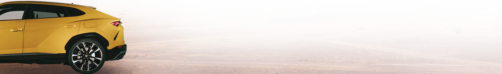
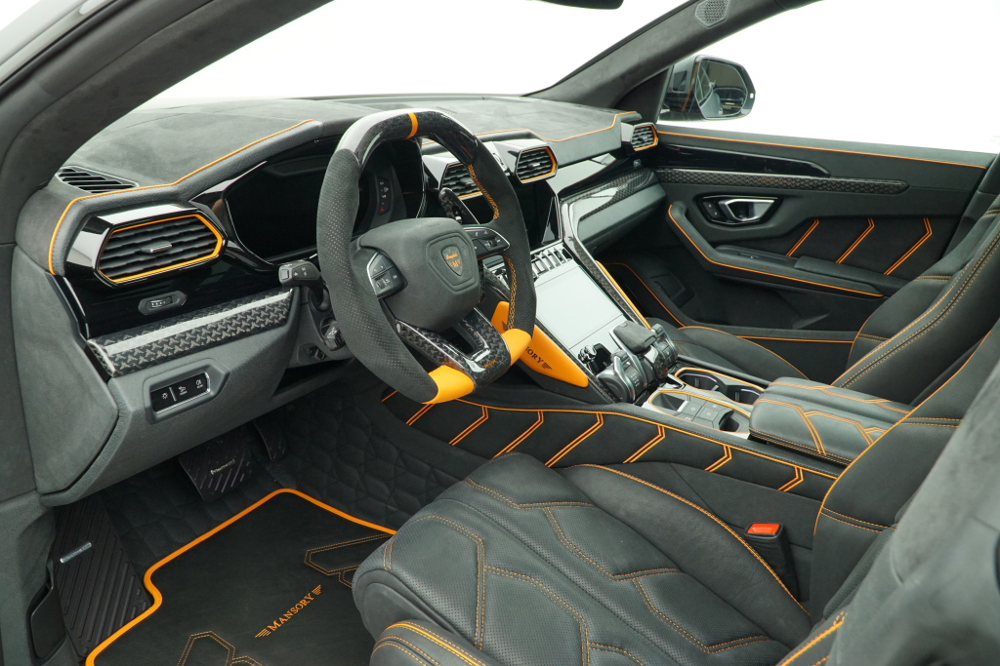

A super sports car soul and the functionality typical for an SUV: this is
Lamborghini Urus, the world’s first Super Sport Utility Vehicle. Identifiable as
an authentic Lamborghini with its unmistakable DNA, Urus is at the same time
a groundbreaking car: the extreme proportions, the pure Lamborghini design
and the outstanding performance make it absolutely unique. Urus’ distinctive
silhouette with a dynamic flying coupé line shows its super sports origins,
while its outstanding proportions convey strength, solidity and safety. Without
a doubt the factors at the heart of Urus’ success are advanced design
extraordinary driving dynamics and thrilling performance. All these features
allowed Lamborghini to launch a Super Sport Utility Vehicle remaining loyal to
its DNA.

.jpg)
In the Lamborghini Urus interior, luxurious Italian craftsmanship meets state-of-the-art
technology. The aeronautic design and the driver-oriented instrument concept with three TFT
screens (one for the instruments, one for infotainment and one for comfort functions, including
virtual keyboard feature with hand-writing recognition) put the driver’s needs at the forefront
and make the overall experience more comfortable and enjoyable. The dashboard architecture
follows the “Y” theme inspired by iconic Lamborghini models. The interior can be customized
starting from the five-seater architecture with bench seat, or four seats with two individual back
seats, and be made even more elegant or sportier, through the selection of different kinds of
colors and materials, such as: natural leather, Alcantara®, wood finish, aluminum or carbon –
with the option for further sophistication on select materials through contrast stitching.

Price - Rs 3.10 crore
FUEL TYPE - Petrol